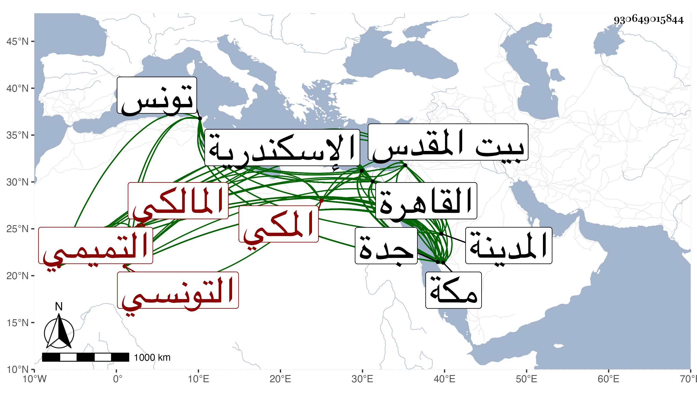

0902Sakhawi.DawLamic.ITO20230111-ara1.EIS1600.930649015844
Biography ID: 930649015844
695
محمد بن عمر بن محمد بن أحمد بن عزم الشمس أبو عبد الله التميمي التونسي ثم المكي المالكي والد محيي الدين محمد الآتي ويعرف بابن عزم بمهملة ثم معجمة مفتوحتين ثم ميم . ولد في شوال سنة ست عشرة وثمانمائة بتونس ونشأ بها فقال أنه حفظ القرآن والرائية والجرومية وأرجوزة الولدان المعروفة بالقرطبية وقطعة صالحة من الرسالة ومعظم الشاطبية وعرض بعضها ببلده وتلا لورش على مؤدبه مقرئ تونس أبي القسم بن الماحد وبعضه لنافع على غيره بل سمع بالعشر بقراءة أخيه على بعض القراء ، وارتحل في مستهل رجب سنة سبع وثلاثين فقدم اسكندرية أول التي تليها وحضر بها مجلس عمر البسلقوني وغيره ، ثم قدم القاهرة في أثنائها فأقام بها إلى أواخر سنة تسع وثلاثين وتوجه إلى مكة في البحر فوصلها في أول سنة أربعين فدام بها حتى حج ثم توجه في أوائل التي تليها إلى المدينة النبوية فجاور بها بعض سنة وسمع بها على الجمال الكازروني ثم انفصل عنها في أثناء السنة فوصل القاهرة ثم رجع لمكة في أثناء سنة اثنتين وأربعين فأقام بها مدة وسمع بها اتفاقا بساحل جدة على الموفق الأبي واستمر إلى أثناء سنة سبع وأربعين فوصل القاهرة فسمع بها من شيخنا المسلسل ومجلسا من صحيح مسلم وكتب عنه مجالس من أماليه وتوجه منها في سنة تسع وأربعين إلى البلاد الشامية وزار بيت المقدس ثم رجع إلى القاهرة ثم إلى مكة فيها فقطنها وسمع بها على مشايخها والقادمين إليها ، وأكثر عن أبي الفتح المراغي ، وسافر منها غير مرة إلى القاهرة وتكسب في كل منها بالتجليد وكذا بالتجارة في الكتب ولازم بمكة المحيوي عبد القادر المالكي في العربية وغيره وانتفع به في الظواهر يسيرا وتخرج بصاحبنا النجم بن فهد في كتابة الطباق ، وتتبع شيوخ الرواية وصار له في ذلك نوع المام مع اعتناء بتقييد بعض الوفيات وتتبع لترتيب من يراه في الاستدعاآت ونحوها وربما سمع يسيرا ثم لما كنت بمكة رافقني في سماع أشياء بل سمعت بقراءته الرسالة القشيرية وغيرها وكذا طاف بالقاهرة على الشيوخ وسمع فيها أيضا بقراءتي واستمد مني كثيرا ووصفني بشيخنا العلامة حافظ العصر وبالغ في غير ذلك ثم أنه خلط فإنه اشتد حرصه على تحصيل تصانيف ابن عربي والتنويه بها وبمصنفها حتى صار داعية لمقالته وركن إليه أهل هذا المذهب فكان يجلب إليهم من تصانيفه ما ينمقه ويحسنه فيرغبونه في ثمنه وربما قصد كثيرا من عوام المسندين في الخفية لقراءتها لتكون متصلة الإسناذ زعم وعذلته كثيرا عن ذلك فما كف بل أفاد حقدا ومقاطعة ، وسمعته ينشد مما زعم أنه كتب به لشيخنا :
| ديني وفقري وهم عائلتي | دعت يداك لعل ترحمهم |
| حاشا يخيبون إن دعوك وهم | ثلاثة لا ترد دعوتهم |
وكذا سمعته يقول :
| يا بن فهد يا عمر | جادك الفتح ودر |
| إنما الناس نجوم | بينهم أنت قمر |
وقد رأيته في سنة ست وثمانين والتي بعدها وقد هش وكبر واستعان بالعكاز ولازم الشكوى والعتب على الزمن وأهله ، واستمر كذلك حتى مات في ليلة الجمعة تاسع ربيع الآخر سنة إحدى وتسعين عفا الله عنه وإيانا وخلف أولادا ولم يوجد في تركته من جمعه وتعبه ما ينتفع به .
